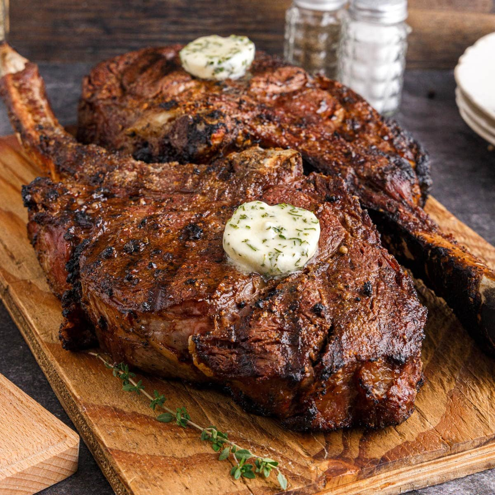

Recipe Of Tomahawk Steak

Tomahawk Steak
This grilled tomahawk steak recipe is a showstopper, ideal for sharing
with friends and family. This reverse-seared steak is cooked to perfection
with an unctuous compound butter filled with shallots, garlic, and chives.
I like to use a Bluetooth-enabled meat thermometer to help me achieve the
perfect medium-rare internal temperature.
Ingredients:
- Brown Sugar
- Montreal Steak Seasoning
- Garlic Powder
- Onion Powder
- Tomahawk Steak
- Salted Butter
- Minced Shallot
- Minced Garlic Clove
- Fresh Chives
- Steak Rub
Steps:
-
Rub brown sugar, Montreal steak seasoning, garlic powder, and onion
powder in an airtight container.
- Place steak on a half sheet pan, and rub steak on top
-
Place butter, shallot, garlic, chives, and the reserved 2 teaspoons
steak rub in a small bowl.
-
Remove steak from the refrigerator 1 hour before cooking to take the
chill off.
-
The reverse sear method is used to cook this big steak, so you will need
an instant-read thermometer.
-
Bake steak on the sheet pan in the preheated oven until an instant-read
thermometer inserted into the center.
- Preheat an outdoor grill for high heat and lightly oil the grate.
- Remove steak from the oven.
-
Grill steak directly on the grates of the preheated grill; sear on both
sides.
-
The internal temperature should now read 125oF to
135oF (51 - 57 oC) for medium rare.
- Remove steak from the grill, and smear compound butter over top.
-
Let butter melt into the steak, heating up the fresh garlic, shallots,
and chives. Let steak rest for 10 minutes.
- Slice steak and serve with accumulated juices and melted butter.
- Be sure to serve the bone, someone will want to gnaw on it!